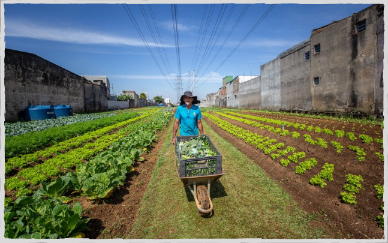
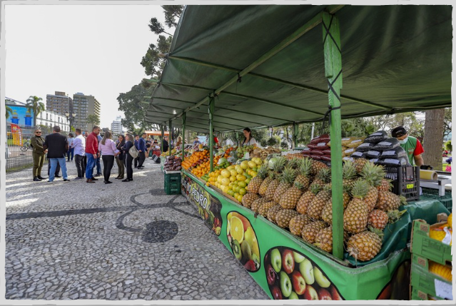
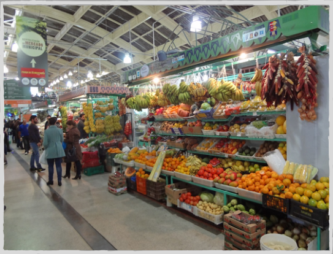
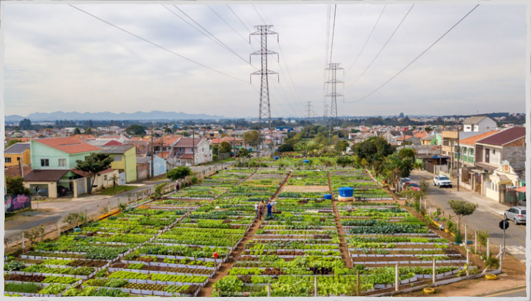

Página Inicial
Produção Rural
Iniciativas
Benefícios
Casos de Sucesso
Para Saber Mais
Contato
Veja em Ação
Aqui vão algumas exemplos das práticas de Segurnça Alimentar,
como hortas, feiras e mercados.
   